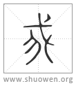

𢦠
古文我。
宋代 徐鉉 徐鍇 注釋
徐鍇曰：“从戈者，取戈自持也。”
清代 段玉裁《說文解字注》
- 施身自謂也。
不但云自謂而云施身自謂者、取施與我古爲㬪韵。施讀施捨之施。謂用己廁於衆中、而自稱則爲我也。施者、旗貌也。引申爲施捨者、取義於旗流下𠂹也。釋詁曰。卬吾台予朕身甫余言我也。又曰。朕子躬身也。又曰。台朕賚畀⺊陽予也。或以賚畀卜予不同義。愚謂有我則必及人。故賚畀卜亦在施身自謂之內也。口部曰。吾、我自稱也。女部曰。姎、女人自稱姎我也。毛詩傳曰。言、我也。卬、我也。論語二句而我吾互用。毛詩一句而卬我襍稱。葢同一我義而語音輕重緩急不同。施之於文若自其口出。
- 或說我、
逗。
- 頃頓也。
謂順側也。頃、頭不正也。頓、下首也。故引申爲頃側之意。賓筵。側弁之俄。箋云。俄、傾貌。人部曰。俄、頃也。然則古文以我爲俄也。古文叚借如此。
- 从戈𠄒。
合二成字不能定其會意形聲者、以𠄒字不定爲何字也。五可切。十七部。
- 𠄒、古文𡍮也。
𡍮當作𠂹。𠂹𡍮在十七部。然則我以爲形聲也。
- 一曰古文殺字。
我从殺、則非形聲。會意亦難說也。殺篆下載古文三。有一略相似者。